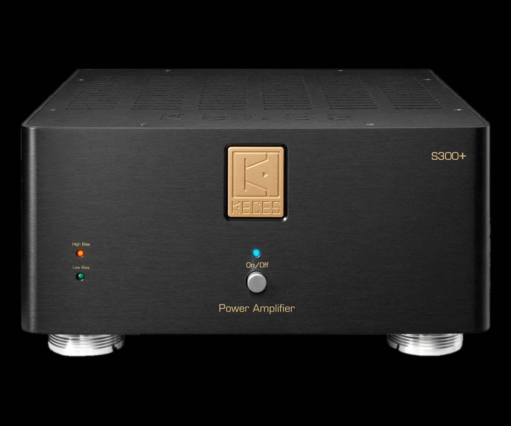
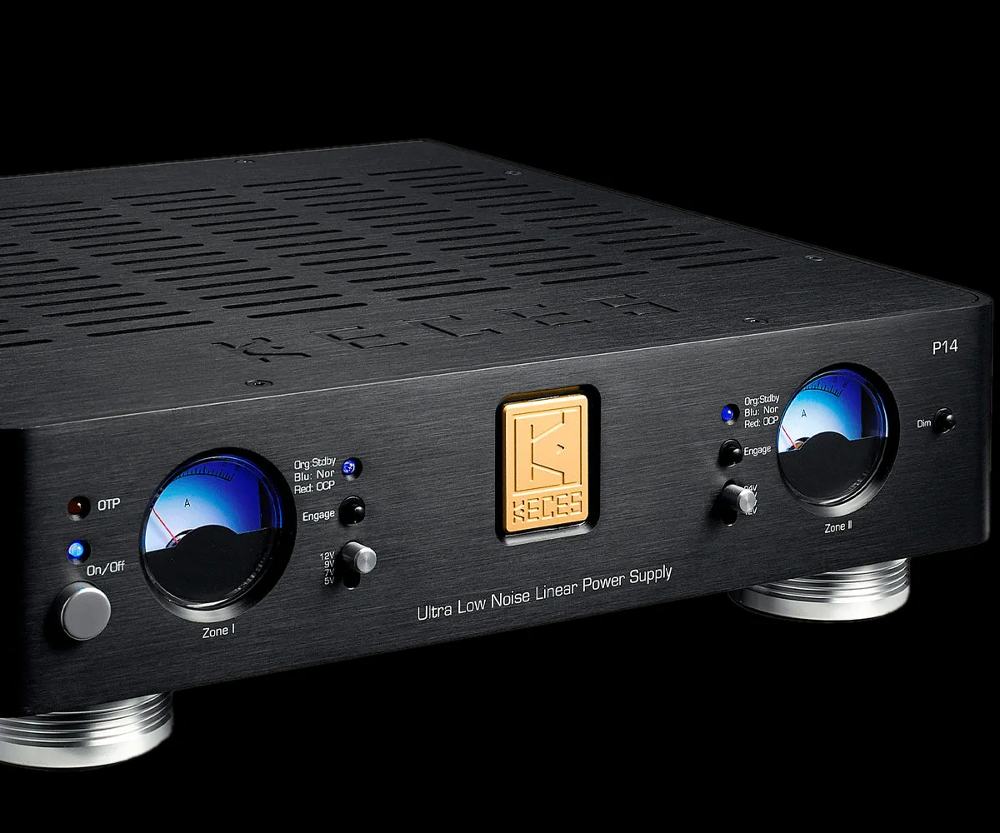
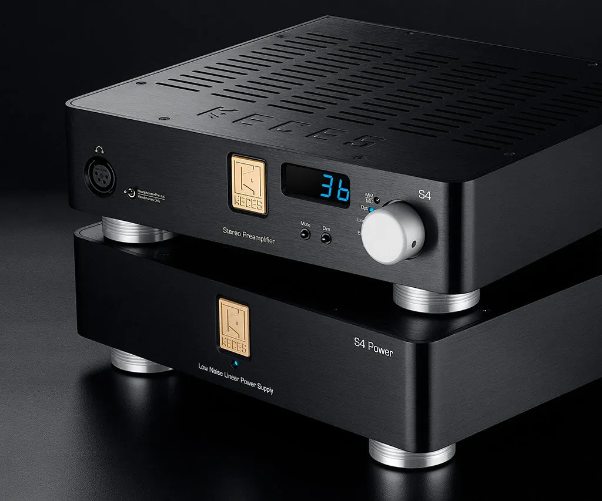
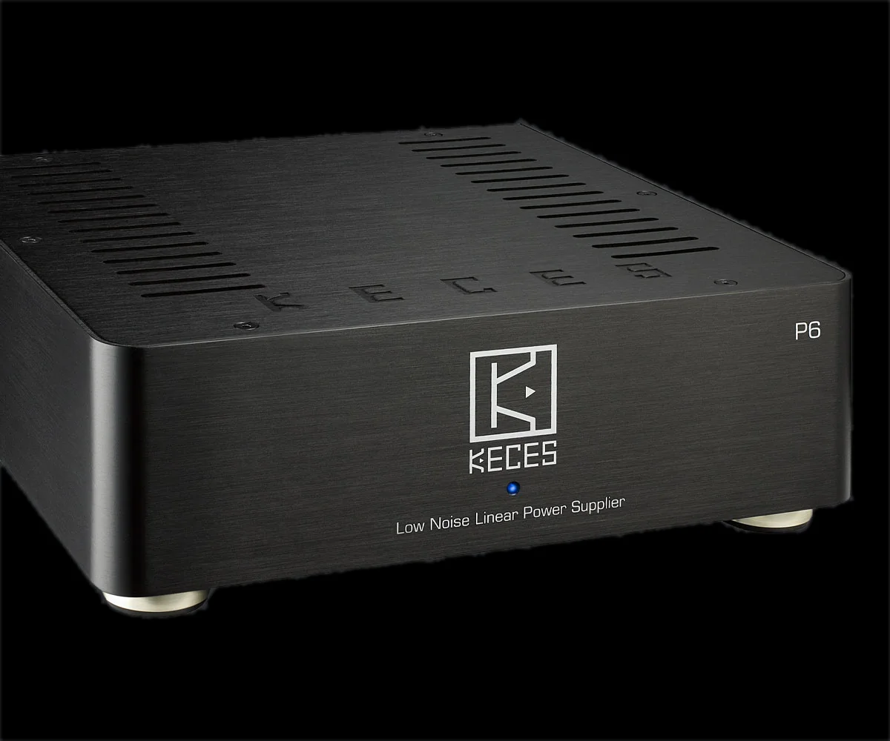
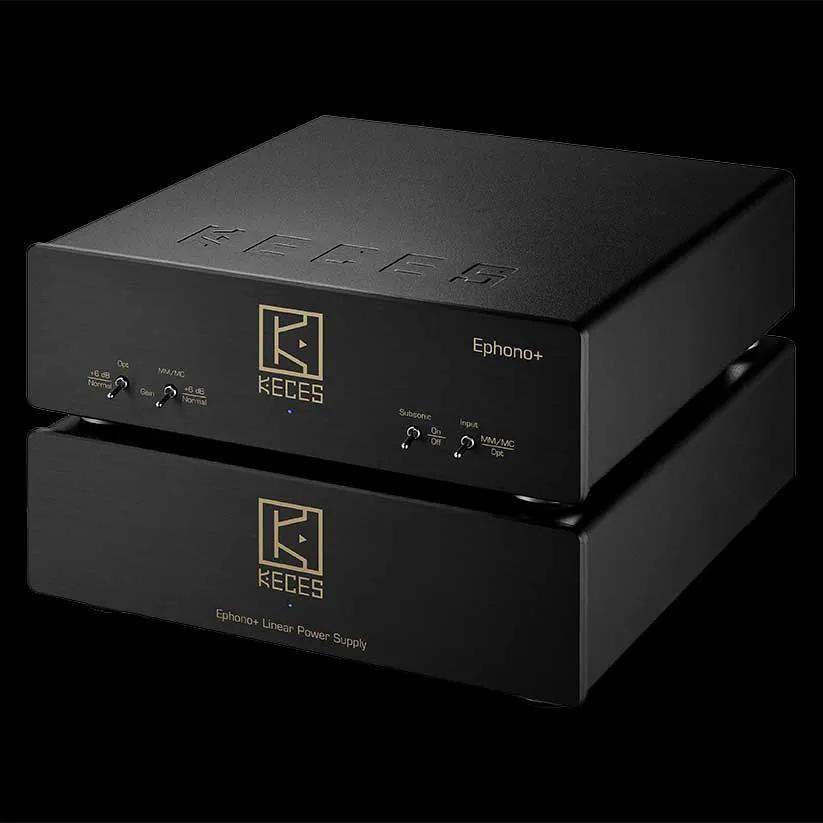
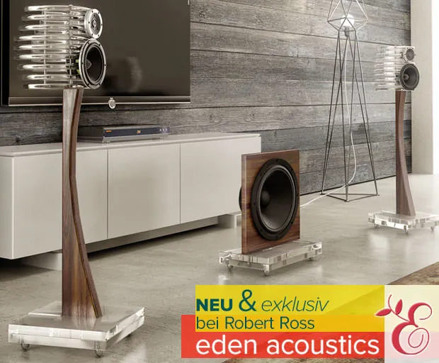
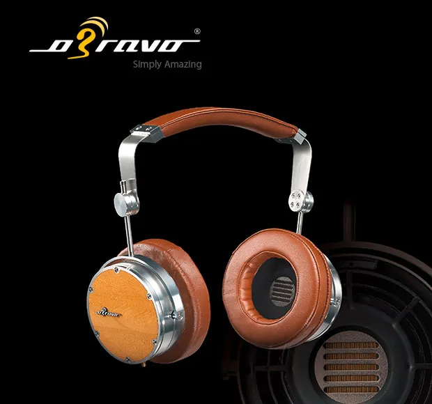
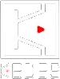

Audiophile Produkte
Willkommen in der audiophilen Welt von Robert Ross.
Damit Klang und Empfinden Ihren Geist treffen!
Musik
Keine menschliche Kultur wurde bis jetzt ohne Musik entdeckt.
Knochenflöten in Neandertalhöhlen, die sich harmonisch in die Wandmalereien von tanzenden Menschen einfügen, sind einer von vielen Beweisen, daß in allen Lebenslagen Musik ein Grundbedürfnis ist - seit Anbeginn.
Musik bewegt den menschlichen Geist, gibt Stimmungen wieder - zur ungesprochenen Sprache von Emotionen - und schafft Verbindungen durch Raum und Zeit.
Musikalischer Ausdruck war schon immer die Grundlage von den Fertigkeiten und Fähigkeiten der Instrumentenbauer. Meisterhaft entwickelte und hergestellte Instrumente wurden traditionell gelobt, nicht nur wegen der Förderung von Schwingungen zwischen dem Hörer und der Musik, sondern auch für ewige Schönheit und Erhabenheit in der Benutzung.
Robert Ross Audiophile Produkte versucht dieser Tradition zu folgen, indem wir Instrumente in unserer Vertriebspalette haben, die zum zeitlosen, wortlosen herumlungern in einer nicht ausdrückbaren Sphäre der Musik einladen.
Damit Klang und Empfinden Ihren Geist treffen!
Sofort beim Hören ist ihre starke Musikalität dramatisch hörbar. Die langfristige Stabilität, der Werterhalt und das elegante Design platzieren diese in einer eigenständigen Kategorie von Musikinstrumenten.
Produkte
Hifi und High End im Überblick
Lautsprecher (aktiv, passiv, isodynamisch), Plattenspieler, Phonovorstufen, DACs, Vorstufen, Vollverstärker, Endstufen, Kopfhörer, Kopfhörerverstärker, Lineare Netzteile, Power Conditioner, Kabel und Zubehör. Die Marke führt Sie direkt zum Hersteller.
Marke
KECES Audio
Seit 2002 entwickelt KECES Netzteile, Netzfilter, DAC, Kopfhörerverstärker, Vorstufen, Endstufen und Phonovorstufen mit eigenen Ringkerntransformatoren und massiven Aluminiumgehäusen. Vertrieb in Deutschland durch Robert Ross Audiophile Produkte GmbH.





Technische Daten KECES nach Herstellerbroschüre 2019
BP Serie · Balanced Isolation Power Conditioner
| BP600 | BP1200 | BP2400 | BP5000 | |
|---|---|---|---|---|
| Eingangsspannung | 220–240 V | 220–240 V | 220–240 V | 220–240 V |
| Ausgangsspannung | 220–240 V | 220–240 V | 220–240 V | 220–240 V |
| Leistung | 600 VA | 1200 VA | 2400 VA | 3800 VA + 600 VA + 600 VA |
| Ausgänge | 2 | 4 | 8 | 4 + 2 + 2 |
LPS Serie · Linear Power Supply
| P8 | P3 | |
|---|---|---|
| Ausgänge | Dual oder Single, je mit USB-Ausgang (5 V / 1 A) | Dual: 5 / 7 / 9 V & 12 / 15 / 16 V sowie 12 / 15 / 16 V & 12 / 15 / 16 V |
| Strom je Ausgang | 4 A (dual), 8 A (mono) | 3 A (dual) |
| DC-Hohlstecker | 2,5 mm / 5,5 mm | 2,5 mm / 5,5 mm |
| Eingangsspannung | 220–240 V, 50 Hz | 220–240 V, 50 Hz |
| Max. Leistungsaufnahme | 200 W | 120 W |
| Gehäuse | 4 mm Vollaluminium | 3 mm Vollaluminium |
| Abmessungen (B×T×H) | 300 × 200 × 66 mm | 220 × 220 × 66 mm |
| Gewicht | 6 kg | 3,5 kg |
Superior Serie · S3 DAC, Kopfhörerverstärker & Vorstufe
| DAC-Chip | ESS ES-9026 PRO |
|---|---|
| USB | PCM bis 32 Bit / 384 kHz; DSD64 / DSD128 (DoP); DSD64 / 128 / 256 (ASIO nativ) |
| Koaxial / optisch | PCM bis 24 Bit / 192 kHz; DSD64 (DoP) |
| Kopfhörer XLR 4-Pin | 2000 mW an 32 Ω, 1200 mW an 300 Ω, 650 mW an 600 Ω (THD+N = 0,1 %) |
| Kopfhörer 6,35 mm | 1200 mW an 32 Ω, 350 mW an 300 Ω, 175 mW an 600 Ω (THD+N = 0,1 %) |
| Eingänge analog | XLR (47 kΩ, max. 10 Vrms), RCA (47 kΩ, max. 5 Vrms) |
| Lautstärke | 128 Stufen |
Superior Serie · S125 Endstufe
| Leistung | 2 × 125 W an 8 Ω, 2 × 225 W an 4 Ω, BTL: 1 × 360 W an 8 Ω |
|---|---|
| Leistungsbandbreite | 5 Hz – 100 kHz |
| Spitzenstrom | 30 A pro Kanal |
| THD+N | < 0,004 % bei 1 kHz (A-bewertet) |
| Rauschabstand | 113 dB (A-bewertet) |
| Eingang | Empfindlichkeit 1 V, Impedanz 38 kΩ |
| Leistungsaufnahme | 500 W |
| Abmessungen (B×T×H) / Gewicht | 300 × 220 × 133 mm / 12 kg |
Superior Serie · SPHONO & SPHONO Power
| Eingänge | 2 × MM, 2 × MC |
|---|---|
| MC-Impedanz | 56 / 100 / 220 / 470 Ω / 1,2 kΩ / 47 kΩ |
| MM-Kapazität | 47 / 100 / 150 / 220 / 330 / 470 pF |
| Entzerrung | RIAA / IEC (± 0,2 dB), Subsonic-Filter schaltbar |
| Ausgänge | RCA und XLR symmetrisch |
| Versorgung | DC ± 48 V und + 15 V (SPHONO Power), 18 W |
| Abmessungen (B×T×H) / Gewicht | 300 × 220 × 66 mm / 5 kg |
Economy Serie · EPHONO & EPHONO Power
| Frequenzbereich | 20 Hz – 20 kHz |
|---|---|
| THD | MM < 0,002 %, MC < 0,09 % |
| Rauschabstand | MM 96 dB, MC 82 dB (A-bewertet) |
| Eingangsimpedanz | MM 47 kΩ, MC 56 / 100 / 220 Ω |
| Verstärkung | MM 40 / 46 dB, MC 60 / 66 dB |
| Versorgung | DC 24 V (EPHONO Power, 24 V / 2 A, 60 W) |
| Abmessungen (B×T×H) / Gewicht | 220 × 220 × 66 mm / 3,5 kg (Netzteil 3 kg) |
Economy Serie · E40 Vollverstärker
| Leistung | 2 × 50 W an 8 Ω, 2 × 65 W an 4 Ω |
|---|---|
| Frequenzgang | 10 Hz – 100 kHz |
| THD+N | < 0,008 % bei 1 kHz (A-bewertet) |
| Eingänge | 2 × analog RCA, Phono MM (47 kΩ), USB 2.0 asynchron (PCM bis 16 Bit / 48 kHz) |
| Kopfhörerausgang | 100 mW an 32 Ω (3,5 mm) |
| Leistungsaufnahme (max.) | 180 W |
| Abmessungen (B×T×H) / Gewicht | 220 × 220 × 66 mm / 4 kg |
Quelle: KECES Broschüre 2019. Technische Änderungen vorbehalten; verbindlich sind die Angaben des Herstellers (kecesaudio.de).


Quellen
Verstärkung
Vorstufen
Vollverstärker
Endstufen
Kopfhörerverstärker
Wiedergabe
Aktive Lautsprecher
Passive Lautsprecher
Isodynamische Lautsprecher
Kopfhörer
Strom & Verbindung
Marken
Eden Acoustics
Aktive Lautsprecher
edenacoustics.de ›
Keces Audio
Endstufen · Lineare Netzteile · Power Conditioner · DACs · Kopfhörerverstärker · Vorstufen · Vollverstärker · Phonovorstufen · Zubehör
kecesaudio.de ›oBravo
Kopfhörer · Kopfhörerverstärker
obravo.de ›Pear Audio
Plattenspieler
pearaudio.de ›Straight Wire
Kabel
straightwire.de ›Ferienhäuser Ostsee
Ferienhäuser an der Ostsee
darssprerow.de ›Händler
Fachhändler in Ihrer Nähe
Klappen Sie eine Marke auf, um die Händler zu sehen.
Kategorie Keces Audio
Keces Audio – Händler in Deutschland 47 Händler, nach Postleitzahl
Quelle: Händlerliste auf kecesaudio.de, abgerufen am 10.11.2026. Angaben bitte vor dem Besuch beim Händler prüfen.
oBravo Deutschland und Schweiz
Die Händlerlisten werden von oBravo gepflegt.
Straight Wire Deutschland
Die Händlerliste wird von Straight Wire gepflegt.
News & Chronik
Neuigkeiten aus unserem Programm
Meldungen und Firmengeschichte von Robert Ross Audiophile Produkte GmbH seit 1987, neueste zuerst.
Alle News & Chronik anzeigen Archiv 1987 – 2012 · 42 Meldungen in 14 Jahrgängen
2012 2 Einträge
- Meldung
Neu im Vertriebsprogramm:
Mass Fidelity: Starke Klänge für Urbane Räume (www.mass-fidelity.de).
- Meldung
25 Jahre Straight Wire Vertrieb in Deutschland.

Wir feierten am 25.08.2012 das 25-jährige Vertriebsjubiläum.
2009 1 Eintrag
- Meldung
Neu im Vertriebsprogramm: peachtree audio.
2007 8 Einträge
- Meldung
Exclusivvertrieb des ultimativen Mediacenters „Ariana - Allsii“ in Deutschland.
- Firmengeschichte
Exclusivvertrieb des ultimativen Mediacenters „Ariana – Allsii“ in Deutschland.
- Meldung
Vertriebserweiterung der ASTINtrew Produkte auf Österreich. Mehr zu ASTINtrew
- Firmengeschichte
Vertriebserweiterung der ASTINtrew Produkte auf Österreich.
- Meldung
20 Jahre Straight Wire Kabel in Deutschland, by Robert Ross Audiophile Produkte GmbH. straightwire.de
- Firmengeschichte
20 Jahre Straight Wire Kabel in Deutschland.
- Meldung
Start des Vertriebes der ASTINtrew Elektronik aus England; „Der audiophile Shooting-Star“. Mehr zu ASTINtrew
- Firmengeschichte
Start des Vertriebes der ASTINtrew Elektronik aus England – „Der audiophile Shooting-Star“.
2006 2 Einträge
- Meldung
Vertriebsbeginn des ultimativen High-End Netstream DVD-Spielers Helios X5000. Mehr zum Helios X5000
- Firmengeschichte
Vertriebsbeginn des ultimativen High-End Netstream DVD-Spielers Helios X5000.
2004 1 Eintrag
- Meldung
News aus der DVD-Welt bei AREA DVD:
Ein Firmware-Upgrade soll den Sat-Receiver Zinwell ZDX 410HD in die Lage versetzen, HDTV mit 60 Hz wiederzugeben. Dies ist wichtig für alle Zinwell-Besitzer, die auf Premiere in der Nacht vom 1. auf den 2. Februar die Premiere-Übertragung des „Superbowl“ in HDTV mitverfolgen möchte.
Denn bei der Anpassung des Zinwell SAT-Receivers, der bislang neben diversen PC-Sat-Karten der einzige SAT-Receiver zum HDTV-Empfang in Europa ist, wurde offensichtlich vergessen, diesen auch für 60 Hz-Signale tauglich zu machen. Während Euro1080 in 1080i mit 50 Hz sendet, wird die 1:1-Übernahme des HDTV-Feeds aus den USA nämlich mit den in den USA üblichen 60 Hz erfolgen.
Das Firmware-Upgrade sowie eine Anleitung zur Installation findet man auf der Seite www.quali-tv.com. Eine Garantie für die erfolgreiche Installation und Verwendung kann freilich nicht übernommen werden.
Die HDTV-Übertragung des Superbowl findet laut Premiere in der Nacht von Sonntag auf Montag auf folgendem ASTRA 3A-Transponder (19.2 Grad Ost) statt:
- Transponder 103
- Frequenz 12460 Hz
- Horizontal
- Symbolrate 27500
- FEC 3/4
2003 7 Einträge
- Meldung
Der ADCOM GFP-710 Stereo Vorverstärker im Test in „Audiophile“ Ausgabe 4/2003.
„[...] Er schon das Budget und weiß mit kraftvoll körperhaften Klang zu begeistern.“
- Firmengeschichte
Einstellung von acurus & ARAGON. Konzentration auf bezahlbares High End.
- Meldung
ARAGON Vertrieb eingestellt
Die für ihre überragende Preiswürdigkeit bekannte High End Marke „ARAGON“ wird ab sofort nicht mehr über Robert Ross Audiophie Produkte GmbH vertrieben. Für weitere Gründe steht Ihnen der Vertrieb unter 08466-905030 gerne zur Verfügung. Selbstverständlich bleiben Service- und Garantieleistungen für die bei autorisierten Händlern gekauften ARAGON Produkte aufrecht.
Robert Ross AG konzentriert sich ab sofort auf bezahlbare High End Elektronik. Dazu hat man die als Endstufenspezialisten bekannte Marke ADCOM ins Boot holen können. Des weiteren wird man selbstverständlich im Kabel und Projektorbereich als kompetente Anlaufstelle bei Problemlösungen weiter dem Endkunden dienen.
- Firmengeschichte
Übernahme des Deutschlandvertriebes für Nexgen-Heimkinoprojektoren („Nexvision“).
- Firmengeschichte
Einstellung von KiSS-Produkten. Service sowie Support bleiben selbstverständlich aufrecht.
- Meldung
Kiss DP-450: Der DivX Player
Ein Artikel über den Kiss-DVD Player DVD DP-450 bei „Spiegel Online“. Zum Artikel
- Meldung
Kiss DP-450: Erster Player für DivX-Video im Hifi-Format
Ein Artikel über den Kiss-DVD Player DVD DP-450 bei „Tom’s Hardware Guide“. Zum Artikel
2002 13 Einträge
- Meldung
Neue Firmware (Ogg-Vorbis, PAL Progressive) für den DVD DP-450 bei video-magazin.de angekündigt. Zur Meldung
- Meldung
Ausführlicher Nachtest mit Bestnoten für den DVD Player KiSS DVD DP-330 bei AREA DVD. KiSS DVD DP-330 · Zum Test
- Meldung
Das Acurus ACT3 Update ist ab Januar 2003 verfügbar. Zum Update
- Meldung
KiSS: DVD-Player für 500 Euro spielt DivX-Videos
Ein Artikel über den Kiss-DVD Player DVD DP-450 bei „Chip-Online“. Zum Artikel
- Meldung
Vielfältiges Abspielgerät

Ein Artikel über den Kiss-DVD Player DVD DP-450 in der „Computer Bild“.
- Meldung
Dänisches Allroundtalent für Filme aus dem Netz

Ein Artikel über den Kiss-DVD Player DVD DP-450 bei FOCUS.
- Meldung
NETedition kündigt den Kiss-DVD Player DVD DP-450 an. Zur Meldung
- Meldung
Das T-Online Newsportal kündigt den Kiss-DivX DVD Player DVD DP-450 an. Zur Meldung
- Meldung
Who is Who: Ein CE-Markt Artikel

Über das zukunftsorientierte und innovative Unternehmen „KiSS Technology“ sowie den Kiss-DVD Player DVD DP-330. KiSS DVD DP-330
- Meldung
Nochmals Bestnoten für den Kiss-DVD Player DVD DP-330, diesmal in der DVD-Vision Ausgabe 08/2002 im Test. KiSS DVD DP-330 · Testbericht (Bild)
- Firmengeschichte
Robert Ross Audiophile Produkte GmbH übernimmt den Vertrieb von Adcom – bezahlbares High-End aus den USA.
- Meldung
Der KiSS DVD DP-330 DVD-Player bei video.de im Kurzcheck: KiSS DVD DP-330

HDCD/DVD-Player für 349 € aus Dänemark, 07.05.2002
Das neue Highlight im Hause Robert Ross Audiophile Produkte GmbH ist eine echte Perle. Der erste europäische Codefree-DVD-Spieler mit HDCD und SVCD für unter 1000€ ist mit allem was man braucht ausgestattet, inkl. der Option sich beim Hersteller Updates herunterzuladen.
Die Austattungsliste klingt vielversprechend:
- 24 Monate Garantie mit Pick-up Service!!
- eingebauter Dolby Digital Decoder
- dts
- Codefree
- MP3 !!
- HDCD
- 24 Bit/96kHz
- VideoCD (1.0/1.1/2.0)
- SVCD
- CD-R und CD-RW kompatibel
- DVD-R kompatibel
- PAL/NTSC
- optischer und koaxialer Tonausgang
- Videoausgänge: Composite, RGB-Scart, S-Video
- Silber-schwarzer, sehr edler Look
- Mehrsprachige Bedienungsanleitung (inkl. deutsch ;-))
- Hergestellt in Dänemark
- ALLE Kabel im Karton enthalten (Scart, Composite, S-Video, Cinchstereo).
Das beste ist aber der Preis für den Schönling aus Dänemark: Lediglich 349 € werden für den Kauf fällig.
Wir werden Ihnen in Kürze das Gerät hier ausführlich vorstellen.
- Firmengeschichte
Übernahme des Kiss-Technology Deutschlandvertriebes. High-Tech im dänischen Design.

2001 2 Einträge
- Firmengeschichte
Klipsch legt die Produktlinie Acurus auf „Eis“ und die Aragon-Palette wird überarbeitet.
- Firmengeschichte
Mondial Designs (Aragon, Acurus) wird von der Firma Klipsch übernommen.
2000 1 Eintrag
- Firmengeschichte
Umfirmierung in Robert Ross Audiophile Produkte GmbH.
1994 1 Eintrag
- Firmengeschichte
Umzug in das neue Vertriebsgebäude mit Abhörräumen, Lager, 3 Büros, Kabelkonfektionierung, Werkstatt auf 2200 qm Grundstück.
1991 1 Eintrag
- Firmengeschichte
Mondial Designs stellt die Produktlinie Acurus vor.
1990 1 Eintrag
- Firmengeschichte
Übernahme des Deutschlandvertriebes von Mondial Designs New York. Highlights: Aragon D2A, Vorverstärker 24k, Endstufe 4004MKII.
1988 1 Eintrag
- Firmengeschichte
Übernahme des Deutschlandvertriebes „Straight Wire Premiumkabel“ aus den USA.
1987 1 Eintrag
- Firmengeschichte
Grosshandel mit audiophilen Tonträgern wie Gecko, MFSL, DMP, Reference Recordings, Sheffield Lab und Telarc direkt aus den USA.
Links
Empfehlungen und Wissenswertes
Elektronik
- SonosMulti-Room-Musiksystem
- Slim DevicesNetzwerk-Musikplayer
- Hantz und PartnerDUNE HD Center
Lautsprecher
Infos und Tests
- audio.de
- audiomap.de
- areadvd.de
- cinehome.de
- dvd-vision.de
- heimkino-faq.de
- heimkinomarkt.de
- hifi-forum.de
- hifistars.de
- loehneysen.de
- monomedia.de
- peterfinzel.de
- super-audio.de
Nützliches
- Luxman-Serviceavs-oymann.de
- RMP4MPEG-4-Software von Sigma Designs
- VirtualDubVideobearbeitung für Windows
Support
Downloads
Keces Audio
Downloads rund um Keces Audio.
Straight Wire
Downloads rund um Straight Wire.
Know How
Preise / Bestellung
Produktinfo
Weitere Broschüren, Handbücher und Produktfotos erhalten Sie auf Anfrage über unsere Kontaktseite.
Kontakt
Fragen? Sprechen Sie uns an.
Schulstr. 1
18375 Ostseebad Prerow